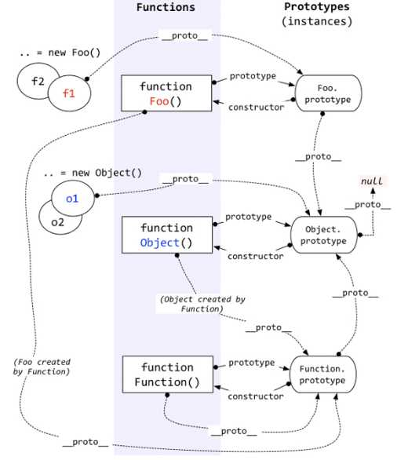

Github开源的书籍，对JS的深入程度很高的一本书，用于提升对js语法的理解等级。对于想深入理解js语法的同学来说特别有效。
此篇总结是在原书的基础，调整结构并增加一部分内容，相比原书更简洁，更容易理解

话不多说，先把这一系列的电子书链接贴上 (中文版的，原版英文在git上，地址:https://github.com/getify/You-Dont-Know-JS )
链接：http://pan.baidu.com/s/1qYIAX9U 密码：kxnm
写在前面的一些话
作为一门计算机语言，最好不要对相关语法奉为圭臬，那种在语法层面，写一大堆合法，却难懂得代码，我觉得意义是真的不大，
当然了，在某些情况下，用复杂语法少量代码完成很有意义的动作，就是我们追求的目标了。
JS引擎 Engine
JavaScript解析引擎就是能够“读懂”JavaScript代码，并准确地给出代码运行结果的一段程序。比方说，当你写了 var a = 1 + 1; 这样一段代码，JavaScript引擎做的事情就是看懂（解析）你这段代码，并且将a的值变为2。
学过编译原理的人都知道，对于静态语言来说（如Java、C++、C），处理上述这些事情的叫编译器（Compiler），相应地对于JavaScript这样的动态语言则叫解释器（Interpreter）。这两者的区别用一句话来概括就是：编译器是将源代码编译为另外一种代码（比如机器码，或者字节码），而解释器是直接解析并将代码运行结果输出。
但是，现在很难去界定说，JavaScript引擎它到底算是个解释器还是个编译器，因为，比如像V8（Chrome的JS引擎），它其实为了提高JS的运行性能，在运行之前会先将JS编译为本地的机器码（native machine code），然后再去执行机器码（这样速度就快很多），这里就用到了JIT（Just In Time Compilation），即会一边编译代码，一边执行代码。
所以，js引擎这个定义不好说，简单点说，就是从头到尾负责整个JS程序的编译及执行动作。那么这么定义的话，编译器，解释器，作用域等等都属于js引擎的范畴。
JavaScript引擎是浏览器的组成部分之一。因为浏览器还要做很多别的事情，比如解析页面、渲染页面、Cookie管理、历史记录等等。那么，既然是组成部分，因此一般情况下JavaScript引擎都是浏览器开发商自行开发的。比如：IE9的Chakra、Firefox的TraceMonkey、Chrome的V8等等。
JavaScript解析引擎与ECMAScript是什么关系
ECMAScript是一套语法规则，而JavaScript解析引擎是一段程序，是来实现这套规则的。
js引擎的LHS和RHS动作
就我目前了解的来看，我觉得这个没有理解的必要。1
2a=2; //典型LHS引用
console.log(a); //典型RHS引用
区分LHS和RHS的重要性在于：变量还没有声明（即任何作用域中都无法找到该变量）的情况下，二者行为是不同的。
如果RHS 查询在所有嵌套的作用域中遍寻不到所需的变量,引擎就会抛出 ReferenceError 异常。值得注意的是,ReferenceError 是非常重要的异常类型。相较之下,当引擎执行 LHS 查询时,如果在顶层(全局作用域)中也无法找到目标变量,全局作用域中就会创建一个具有该名称的变量,并将其返还给引擎,前提是程序运行在非 “严格模式”下。
js编译器 Compiler
定义 ：负责语法分析及代码生成。
这部分各个浏览器厂商开发的js引擎中都会有，想看懂这部分内容，就要具备编译原理，操作系统，算法等扎实基础了。
一段源码在执行之前会经历三个基本步骤，既“编译”：
- 分词/词法分析(Tokenizing/Lexing)
- 解析/语法分析(Parsing)
- 代码生成
当然 实际情况远比这复杂，这里就不讨论了
作用域和闭包
作用域定义
定义：负责收集并维护由所有声明的标识符组成的一系列查询，并实施一套非常严格的规则，确定当前执行的代码对这些标识符的访问权限。
程序员在实际编码过程中就会经常和作用域以及语法打交道了；
作用域链
要明白作用域链，先理解下作用域嵌套,当一个块或函数嵌套在另一个块或函数中时，这就发生了作用域的嵌套。
那么，有了这种嵌套，自然就有了作用域链的存在，所谓作用域链就是，在发生嵌套的时候，当前作用域无法找到某个变量(包括函数)，引擎就会在嵌套外层的作用域继续查找，找不到，继续去外层找，直到找到该变量，或者抵达全局作用域。
而在这个过程中，就会产生遮蔽效应，即本层作用域定义的变量，会覆盖上一层作用域定义的同名变量。
词法作用域 Lexical
作用域之前已经定义过了，即是一套规则，引擎依据这套规则在作用域链中寻找正确的变量。
目前，作用域有两套工作模型：1.词法作用域 2.动态作用于（Bash，Perl脚本），js采用了前者。
词法作用域定义：在词法阶段的作用域，即作用域由你写的代码的变量和块作用域的位置而决定。
欺骗词法
词法作用域在运行时被“修改”。
- eval(str)
参数为字符串，并在eval处把这段字符串作为js代码执行，由于参数可以动态生成，在这里，词法作用域变得不可控，所以，使用eval要及其谨慎。 - with(obj){}
这个在严格模式下是被禁止使用的，而eval则被限制使用了。
以上两个语法都会拖慢性能。
函数作用域和块作用域 Function vs. Block
函数作用域定义
定义 ： 属于这个函数的全部变量都可以在整个函数的范围内使用及复用（在嵌套的作用域中也可以使用，结合作用域链）。
这意味着 那些在整个作用域范围内能被访问的变量，要细心处理，因为，一旦嵌套增多，工程复杂，会带来意想不到的问题，且处理起来也比较麻烦。
隐藏内部实现
实际上就是利用函数封装一些变量和函数，使被封装的变量和函数外界无法访问。
规避冲突
这个很好理解，我们“隐藏”内部实现，就是为了防止变量标识符的冲突。
1.全局命名空间
第三方库都妥善地将内部私有函数或变量隐藏起来，而暴露一个独特的对象。
2.模块管理
利用js的语法特性，可以实现现代的模块机制，即任何库都无需将标识符加入到全局作用域中， 而是通过依赖管理器的机制将库的标识符显式地导入到另外一个特定的作用域中。
这个后面再讨论。
函数作用域
立即执行函数表达式
1 | var a = 2; |
利用(function(){})(parms)可以立即创建函数并执行，这就避免了这个函数标识符的变量污染。
匿名和具名
匿名函数调试困难，可读性差，尽量使用具名函数
块作用域
场外吐槽:没想到ES6才用let给块作用域提供了更便捷的解决方式
请看如下代码:1
2
3
4
5
6
7
8 for (var i=0; i<10; i++) {
}
console.log( i );//10
var foo = true;
if (foo) {
var j = 2;
}
console.log( j );//2
for以及if中定义的变量i,j竟然泄露到外面的作用域了！！
let
我们显然不想看到变量泄露这种情况发生，那么在ES6(js2015规范)中使用let 定义i,j，就可以杜绝这种情况发生，ES6之前也可以实现，但不谈论，过时了1
2
3 for (let i=0; i<10; i++) {
}
console.log( i );//Uncaught ReferenceError: i is not defined
1.如上所见，let将变量绑定在了当前的块级作用域中了
2.let不会变量提升1
2
3
4{
console.log( bar ); // ReferenceError!
let bar = 2;
}
3.let循环
这可以解决闭包中一些恼人的问题，详情见闭包部分。
4.
块{}
像for(){}，if(){} 就包含块级作用域，那么我们也可以显式创建块级作用域，即使用{}把一段代码包住就可以了。
Tip:块级作用域中的变量一般都是暴露的，使用上文提供的let就可以把变量锁定在该块中
1.垃圾收集
在闭包中，一些不用的声明，并不会被立即的销毁，那么块作用域可以解决这个问题，为变量显式声明块作用域， 并对变量进行本地绑定。如下：1
2
3
4
5
6
7
8
9
10
11
12
13 function process(data) {
// 在这里做点有趣的事情
}
{
let someReallyBigData = { .. };
process( someReallyBigData );
}// 在这个块中定义的内容可以销毁了！
var btn = document.getElementById( "my_button" );
btn.addEventListener( "click", function click(evt){
console.log("button clicked");
}, /*capturingPhase=*/false );
提升 Hoisting
提升：在函数执行过程中，会对变量及函数的声明进行提升，见下：1
2
3
4
5
6
7
8
9
10
11
12
13
14
15console.log(a);//1 变量提升！
var a=1;
gaa();//gaa 函数提升!
function gaa(){
console.log("gaa");
}
foo(); // TypeError 这里提升失败，因为提升仅仅是编译阶段对“声明”的提升。而不产生赋值等操作。
bar(); // ReferenceError
var foo = function bar() {
// ...
};
作用域闭包 Scope Closures
理解闭包的前提之一是对上文所有的作用域有透彻的理解。
1分钟带你了解闭包
首先闭包是一个函数，其次是有权访问另一个函数作用域中的变量的函数。
举个例子，看下图代码：1
2
3
4
5
6
7
8
9function foo() {
var a = 2;
function bar() {
console.log( a );
}
return bar;//bar就是闭包
}
var baz = foo();
baz(); // 2 —— 朋友， 这就是闭包的效果
函数bar()就是闭包，它不仅可以访问自己的内部作用域，还可以访问foo()的作用域。
再来3分钟带你理解闭包
闭包的概念就是这么简单，但是！为什么还有很多人觉得闭包难呢，到底难在哪里呢。？
难就难在这个，闭包可以访问外部的作用域。
一旦可以访问外部的作用域，就相当于打开了魔盒。
你想想，普通函数本身是无状态的(stateless),它们所使用的局部变量都是保存在函式调用栈（Stack）上，随着函式调用的结束、退出，这些临时保存在栈上的变量也就被清空了。
可闭包函数不是这样的，由于它还要访问外部作用域，那么我们的编译器要为其保留执行时的上下文环境，或许要保留几个变量，或许保留几个函数。
由此可见，1.由于外部作用域的变化，闭包会是一个有状态的函数；
2.由于闭包可以对其他作用域的变量进行访问，与其说是函数，更类似于对象；
借助一个循环-闭包经典例子 进一步理解
下面的代码，会如何输出呢?1
2
3
4
5for (var i=1; i<=5; i++) {
setTimeout( function timer() {
console.log( i );
}, i*1000 );
}
错误理解：以每秒一次的频率分别输出1，2，3，4，5；
实际输出结果是：以每秒一次的频率输出五次6；
解析：延迟函数的参数i*1000正常，会在1，2…5秒后执行一次函数timer()，而timer()是一个闭包，它可以访问外部作用域的变量i，实际上，延迟函数的这五次执行，都访问同一个外部作用域的变量i，而循环结束时，i的值是6，那么每次延迟函数的执行，都打印的是6。
解决思路：不让闭包访问同一个外部作用域变量i，为每一次执行延迟函数，创造一个独立作用域。
1 | //传统方法解决 |
这下这段函数正常啦，
现在，你明白闭包了吗？
this和对象模型
this or that?
为什么我们要使用this
this是函数内部的一个特殊对象，它的绑定(即确定this到底是哪个对象的行为)发生在函数调用的时候，一般情况下，this 绑定到最后调用它的那个对象（实际上这是this绑定中的隐式绑定规则）。
上面这句话结合上图 反复看三遍，带着你的疑问，再往下看
有了this，我们可以从this，即当前执行环境对象中，很方便的拿到变量，拿到函数，我们甚至可以改变this指向，这可以把程序设计更加简洁且易于复用。
this指向谁
那么js中，this指向谁呢?
this指向有以下四个绑定规则，优先级从上往下：
- 由 new 调用？ 绑定到新创建的对象。（new绑定）
- 由 call 或者 apply（或者 bind） 调用？ 绑定到指定的对象。（显式绑定）
- 由上下文对象调用？ 绑定到函数调用位置的那个调用它的对象。（隐式绑定）
- 默认： 在严格模式下绑定到 undefined， 否则绑定到全局对象。
清楚了以上四个规则，及优先级，就了解了this的80%，剩下20%我们就不说了 我们接着详细看这四个规则如何应用
this绑定规则解析
调用位置
通常啊，大部分的this绑定都是隐式绑定，这时候我们得借助调用位置，和调用位置的那个调用对象，来判断this需要绑定的对象。
函数调用位置:就是函数在代码中被调用的位置（而不是声明的位置）。
1 | function baz() { |
以上只是一个分析函数调用栈，寻找当前函数调用位置的简单示例。
函数调用链通常会很复杂，这时靠我们自己寻找函数调用位置就会很困难，这就要借助现代浏览器提供的开发者工具，打开调试器，在函数中打断点，可以看到此时的函数调用栈，栈中第一个元素是当前函数，第二个元素就是我们要找的调用函数了。
new绑定
javascript的new对象 和java等其它oop语言 完全不一样
那么，javascript使用new的时候，会发生什么：
1 | function foo(){ |
显然，这里运用 .call(obj) 构造一个新对象并把它绑定到 foo(..) 调用中的 this
上 ,这就是new绑定。
显式绑定
使用 apply、call、bind
这三者使用方法分别是：
- .apply(obj,args[…]);
- .call(obj,arg1,arg2,…);
- .bind(obj)();
1
2
3b.apply(a,[1,2]);
b.call(a,1,2);
b.bind(a,1,2)();
相同点：三者都会把当前执行函数的this绑定到对象obj上
区别很明显:
apply与call只是参数列表不同而已；
bind(obj);如果后面不跟() 那么就不会执行当前函数，而apply、call都会立即执行。
在函数内部使用 _this = this
这种方法有点蠢 不过也可行
示例：1
2
3
4
5
6
7
8
9
10
11
12
13
14
15
16
17
18
19
20var name = "windowsName";
var a = {
name : "Cherry",
func1: function () {
console.log(this.name)
},
func2: function () {
var _this = this;
setTimeout( function() {
_this.func1() //本来this是丢失绑定的，但这里就强制指向window对象了
},100);
}
};
a.func2() // Cherry
隐式绑定
这就是最最基本的绑定方式了，我们不使用new绑定，不人为的显式绑定，都会采取这种绑定方式。
还记得函数调用位置吗，这时候起作用了。
隐式绑定会绑定到函数调用位置的那个调用对象上。
示例：1
2
3
4
5
6
7
8function foo() {
console.log( this.a );
}
var obj = {
a: 2,
foo: foo
};
obj.foo(); // 函数调用位置在这里，函数this绑定到调用对象是obj上 所以结果是2
默认绑定
如果函数是被一个对象调用的，那么有隐式绑定，绑定到调用对象上。
可是并不是只有对象可以调用函数啊。
比如下面：
1 | //1.作为一个函数调用 |
以上三种情况，都没有调用对象，那么this在非严格模式下会默认绑定到windows上，严格模式下为undefined；
提醒：部分javascript库的回掉函数this被强制绑定到触发事件的DOM上了。
大部分情况下，我们可以灵活运用这些绑定规则，实现我们想要的那个this对象！
ES6的箭头函数 =>
ES6的=>函数的this绑定在当前的词法作用域中，而不会随着调用位置，调用对象的变化而变化。
示例：1
2
3
4
5
6
7
8
9
10
11
12
13
14
15function foo() {
// 返回一个箭头函数
return (a) => {
//this 继承自 foo()
console.log( this.a );
};
}
var obj1 = {
a:2
};
var obj2 = {
a:31
};
var bar = foo.call( obj1 );
bar.call( obj2 ); // 2, 不是 3 ！
对象 Objects
语法
1 | //创建对象 |
类型
对象是javascript基础类型之一，javascript一共有六种主要类型:string,number,boolean,null,undefined,object
对象类型object还有一些对象子类型，称为内置对象：
• String
• Number
• Boolean
• Object
• Function
• Array
• Date
• RegExp
• Error
有点类似java自带的类，javascript内置对象本质上是函数。
有些时候javascript会把基本类型转换为对象，例如：”I am a string”.length,这里字符串就被隐式的转为String对象了
内容
ES6动态定义属性名
1 | var prefix = "foo"; |
复制对象
javascript无论是new,还是obj.copy(),Object.assign(..),都只是浅复制。
即值类型会复制一份副本，但是对象都只是复制引用！
这点还是蛮烦的，要想深度复制，即想像java一样，完全创建一个对象副本的话，可以这样： var newObj = JSON.parse( JSON.stringify( someObj ) ); 这种方法要保证JSON安全，只适用于部分情况。
属性描述符
从 ES5 开始， 所有的属性都具备了属性描述符1
2
3
4
5
6
7
8
9
10var myObject = {
a:2
};
Object.getOwnPropertyDescriptor( myObject, "a" );
// {
// value: 2,
// writable: true, 可写性 决定了是否可以修改改属性值
// enumerable: true, 可枚举 决定了属性是否会出现在对象的属性枚举中， 比如说for..in 循环。 如果把 enumerable 设置成 false， 这个属性就不会出现在枚举中
// confgurable: true 可配置 为true时，就可以使用 defineProperty(..) 方法来修改属性描述符
// }
[[Get]]操作
1 | var myObject = { |
myObject.a是一次属性访问，这个访问过程就是[[Get]]操作。
这里的[[GET]]操作，指：1.首先在对象myObject中查找属性名为a的属性值；2.若没找到，会遍历myObject对象的原型链寻找该属性对应的get操作；如果以上都没找到值，返回undefined；
[[Put]]操作
1 | var myObject = { |
这是给对象属性a赋值2的操作；
首先如果myObject对象存在属性a 则[[Put]]操作会执行以下操作：
- 属性是否是访问描述符 ？ 如果是并且存在 setter 就调用 setter。
- 属性的数据描述符中 writable 是否是 false ？ 如果是， 在非严格模式下静默失败， 在严格模式下抛出 TypeError 异常。
- 如果都不是， 将该值设置为属性的值。
如果对象中不存在这个属性， [[Put]] 操作会更加复杂。 我们会在之后讨论 [[Prototype]]时详细进行介绍
Getter和Setter
getter 是一个隐藏函数， 会在获取属性值时调用。 setter 也是一个隐藏
函数， 会在设置属性值时调用。
我们可以通过重写这两个函数，改变对象行为。
如下：1
2
3
4
5
6
7
8
9
10
11
12var myObject = {
// 给 a 定义一个 getter
get a() {
return this._a_;
},
// 给 a 定义一个 setter
set a(val) {
this._a_ = val * 2;
}
};
myObject.a = 2;
myObject.a; // 4
存在性 in
myObject.a 返回undefined 到底是a的值为undefined 还是a属性根本不存在呢
通过(“a” in myObject); // true 即可判断对象是否存在某个属性
in操作 ：检查属性是否存在在该对象内及其[[Prototype]]原型链中；
hasOwnProperty(..) :仅检查属性是否存在在该对象内；
遍历
ES5遍历 ：for…in、forEach(..)、every(..) 和some(..)
ES6新增遍历方法：1
2
3
4
5
6
7
8
9
10
11
12
13
14
15
16
17
18
19
20
21
22
23
24
25
26
27
28
29
30
31
32
33
34
35
36
37
38
39
40
41
42
43
44
45
46
47
48
49
50
51
52
53//直接遍历值而不是数组下标 ：
var myArray = [ 1, 2, 3 ];
for (var v of myArray) {
console.log( v );// 1 2 3
}
//数组内置的 @@iterator
var myArray = [ 1, 2, 3 ];
var it = myArray[Symbol.iterator]();
it.next(); // { value:1, done:false }
it.next(); // { value:2, done:false }
it.next(); // { value:3, done:false }
it.next(); // { done:true }
//给任何想遍历的对象定义 @@iterator
var myObject = {
a: 2,
b: 3
};
Object.defineProperty( myObject, Symbol.iterator, {
enumerable: false,
writable: false,
configurable: true,
value: function() {
var o = this;
var idx = 0;
var ks = Object.keys( o );
return {
next: function() {
return {
value: o[ks[idx++]],
done: (idx > ks.length)
};
}
};
}
} );
// 手动遍历 myObject
var it = myObject[Symbol.iterator]();
it.next(); // { value:2, done:false }
it.next(); // { value:3, done:false }
it.next(); // { value:undefned, done:true }
//定义一个“无限” 迭代器， 它永远不会“结束”
var randoms = {
[Symbol.iterator]: function() {
return {
next: function() {
return { value: Math.random() };
}
};
}
};
混合对象”类” Mixing(Up)”Class” Objects
接下来你会看到如何把面向对象编程的思想，如何落实到javascript代码上
混入实现多态
在继承或者实例化时， JavaScript 的对象机制并不会自动执行复制行为,(javascript不会序列化对象，实际上都是保留引用)。
简单来说，JavaScript 中只有对象， 并不存在可以被实例化的“类”。 一个对象并不会被复制到其他对象， 它们会被关联起来。
JavaScript 开发者也想出了一个方法来模拟类的复制行为，如下：
1 | // 非常简单的 extend(..) 例子 : |
原型 Prototypes
创建对象的三种方式
1 | //1.字面量创建 |
[[Prototype]],__proto__,prototype,constructor 分别是什么意思
我们知道在javascript里是没有类这个概念的(虽然ES6有class关键字了，那实际上是语法糖，本质上还是原型)，那如何实现继承呢。
Javascript采取了原型链这个语法方案实现了继承这个特性。
我们先不探究js原型具体的语法细节，第一步，先弄清楚原型中几个关键词的概念。
关于[[Prototype]],__proto__,prototype,constructor的关系，先看图
JavaScript中所有的对象有一个特殊的 [[Prototype]] 内置属性，即我们的原型，这个属性是对于其他对象的引用，这个对象呢，我们也称为是该对象的原型对象。
这些对象，[[Prototype]] 内置属性是隐藏的，称为隐式原型，在ES5之前都没有标准的方法去访问这个隐藏的内置属性，现在大部分浏览器js引擎对[[Prototype]]属性起了别名__proto__，我们就可以用 对象.__proto__来访问原型。
对象的__proto__一般指向构造函数的原型prototype
正如图上所见，在这些对象里，有一种特殊的对象，它就是函数，它有一个属性prototype，称为显式原型，直接可以用 Function.prototype访问到该原型，这个显式原型包含两个属性，一个是隐式原型__proto__，它又指向另一个函数对象显式原型prototype，另一个就是constructor对象，在函数对象里，这个对象一般指向函数本身。
那么constructor是啥呢？
constructor是原型中的一个属性，在函数里，指向的是自身，而在实例化对象的__proto__里，通常是指向的是创建该对象的那个对象，即构造函数，。
除非你人为的改变constructor属性，如下:1
2
3
4
5
6
7
8
9
10
11
12
13
14
15//正常情况下
function C3(){
}
var c3 = new C3();
console.log(c3.__proto__.constructor); // 对象c3原型中的constructor属性为function C3
//人为改变的话
C3.prototype.constructor = function fake(){};
var c3 = new C3();
console.log(c3.__proto__.constructor);
/*
猜猜打印的是谁，是function fake()
1.为啥是 fake()？ 由函数实例化的对象，对象的原型__proto__指向构造函数的原型,构造函数的原型的constructor被我们改成fake()了
2.constructor是fake() 并不意味着对象c3就是由fake()实例化来的，实际上是由 C3()实例化来的，只不过我们人为的改变了C3原型的constructor指向
*/
constructor的意义：1.拿到实例对象的构造函数 2.对比两个实例是否是同一类型
由于constructor可以人为改变 所以它的意义也就没了多大意义 没办法 JS把灵活性给了你 坑自己填
原型链
上面讲了原型的几个概念，可能你有点晕
别急 我们再来怀疑下人生
JS为啥要搞原型，搞个原型就算了，为啥函数对象和普通对象的原型还不一样！？
答案就是它要完成下图这个叫原型链的东西。
怎么完成？借助普通对象的隐式原型与函数对象的显式原型的关系！
隐式原型__proto__指向创建这个对象的函数的显式原型prototype
这意味着，每一个对象都可以追溯它的原型链条
原型链实际上就反应了对象之间的继承关系
在理解了上述概念和原型的意义之后，看下图 你会豁然开朗

上图展示了new Foo()操作和new Object()的实例化操作 函数以及原型在其中的关系。
总结 仔细看看 原型真的不难 无非就是通过实例化对象时让__proto__指向构造函数的prototype，有了这种标记，使对象，函数之间呈现一种树形化的关系，方便我们追踪，以及实现继承，完成一些抽象操作。
原型链的尽头
__proto__指向prototype，prototype里的__proto__又指向另外一个prototype,那何处是尽头呢？
看上面的原型链图就可以发现 所有的对象原型最后都指向Object.prototype,而它的__proto__属性为null,这就是尽头。
简单使用一次原型完成继承
1 | // 构造函数 Car |
这和java迥然不同，java实例化类产生对象，那真的是new一个新对象，而JS实例化的对象，通过原型链，一层层的传递引用，一旦改变某个原型构造属性，方法，所有的子对象都会受到牵连
属性寻找
这个上文已经解释过这个问题了
1 | var anotherObject = { |
解析：
1.Object.create(prototype object,[properties])方法
A new object with the specified prototype object and properties
会返回一个特定原型和属性(可选的)的对象
在上述例子，myObject对象的隐式原型__proto__会指向anotherObject对象。
2.这时的myObject对象实际上没有a这个属性，myObject.a，即执行[[GET]]操作时(前文提过)，没有寻找到属性a,那么会接着去原型链中寻找，myObject的原型链里有anotherObject的属性a，返回值2
3.这个原型链也会被遍历到，前提是属性为可枚举
4.”a” in myObject，这个语法也会去原型链中寻找
5.obj.hasOwnProperty(str)方法则不会去原型链中寻找
属性设置和屏蔽
myObject.foo = “bar”，这给对象添加一个属性的操作，或者修改已有属性，即[[Put]]操作，牵扯到原型，没有想象中那么简单。
会有以下几种情况：
1.[[Prototype]] 链上没有属性名为foo的属性，这是最简单的，直接在对象myObject上添加一个属性名为foo的新属性。
2.如果在 [[Prototype]] 链上层存在名为 foo 的普通数据访问属性并且没有被标记为只读（writable:false）， 那就会直接在 myObject 中添加一个名为foo 的新属性，且它是屏蔽属性。
3.如果在 [[Prototype]] 链上层存在 foo， 但是它被标记为只读（writable:false）， 那么无法修改已有属性或者在 myObject 上创建屏蔽属性。 如果运行在严格模式下， 代码会抛出一个错误。 否则， 这条赋值语句会被忽略。 总之， 不会发生屏蔽。
4.如果在 [[Prototype]] 链上层存在 foo 并且它是一个 setter， 那就一定会调用这个 setter。 foo 不会被添加到（或者说屏蔽于） myObject， 也不会重新定义 foo 这个 setter。
如果你希望在第三种和第四种情况下也屏蔽 foo， 那就不能使用 = 操作符来赋值， 而是使用 Object.defineProperty(..) 来向 myObject 添加 foo。
那有的时候，在第二种屏蔽情况下，我们不想屏蔽原型链上的值呢，就是想改变原型链上的那个值呢，见如下:
1 | var anotherObject = { |